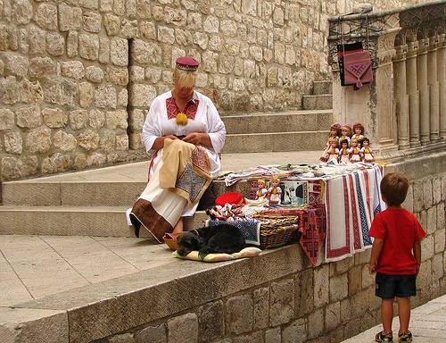

CULTURA
Os croatas mantem sua cultura muito viva, por meio da musica, contos folcloricos, costumes, dancas e rituais.
A Croacia e um pais muito baseado na familia, apesar de, nos tempos modernos, familias pequenas estarem se tornando norma. Geralmente, as pessoas sao bem proximas de seus parentes mais distantes por parte de pai e mae, e os consideram uma base de apoio. Os fins de semana sao geralmente reservados para passar o tempo com a familia.
Em relacao aos cumprimentos, os gestos mais comuns sao o aperto de mao, o contato visual e as saudacoes, dependendo do momento do dia: Dobry jutro pela manha, Dobry dan pela tarde e Dobro veeer pela noite. e uma boa ideia se dirigir as pessoas pelo titulo e sobrenome: Gospodja para senhorita, Gospodice para senhora e Gospodin para senhor. Espere que lhe digam para comecar a chamar pelos primeiros nomes. Nas festas, os anfitrioes geralmente apresentam novas pessoas aos convidados. Eles apresentarao primeiro as mulheres, depois os homens; os mais velhos primeiro, e entao, os mais novos.
.jpeg)
Se voce for convidado para ir a casa de uma familia croata, e educado levar flores a anfitria, e/ou chocolate ou vinho ao anfitriao. As flores devem estar em numero impar e nao podem ser crisantemos, pois esses sao usados em funerais.
.jpeg)
A forma de se portar na hora de comer nao e muito formal na Croacia. As pessoas gostam de apreciar a comida enquanto mantem uma conversa agradavel. No entanto, se voce esta na casa de alguem, voce deve, definitivamente, esperar para que lhe digam onde sentar e esperar o sinal para comecar a comer. Desdobre o seu guardanapo e coloque-o em seu colo. Provavelmente, vao lhe oferecer comida pela segunda vez. e comum recusa-la, e entao, aceita-la mais tarde, se o anfitriao insistir. Quando terminar a refeicao, voce deve deixar sobrar um pouco de comida no prato.

Voltar